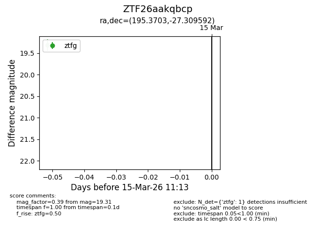
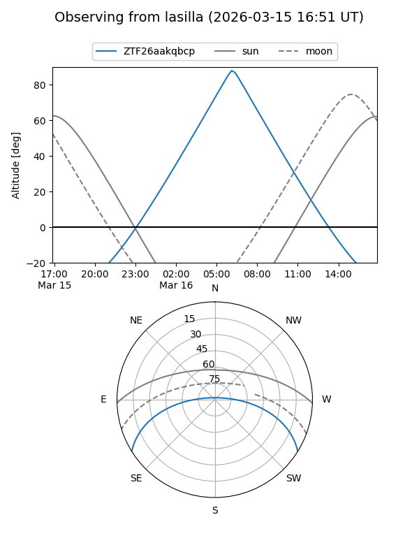
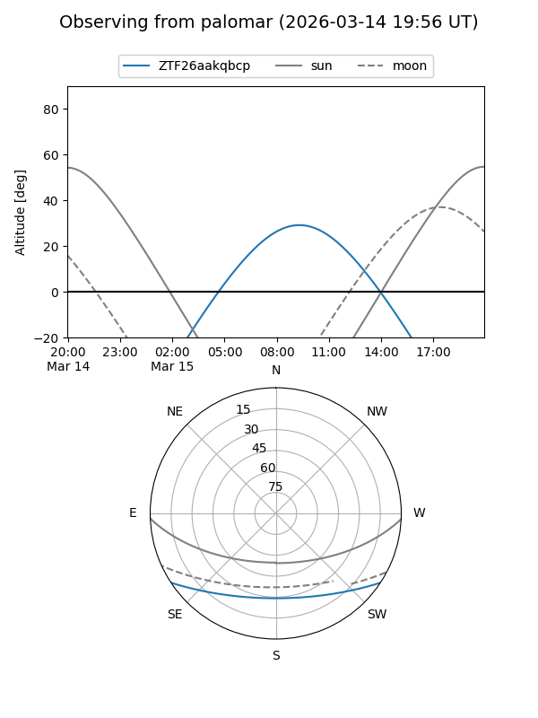

ZTF26aakqbcp
Target ZTF26aakqbcp at 2026-03-15 11:15
Aliases and brokers:
FINK: link
Lasair: link
ALeRCE: link
alt names
ZTF26aakqbcp (ztf,fink_ztf)
Coordinates:
equatorial (ra, dec) = 195.3703,-27.30959
equatorial (HMS+DMS) = 13:01:28.87,-27:18:34.53
galactic (l, b) = (305.6727,+35.50870)
Flags:
Photometry:
last ztfg=19.31
1 ztfg detections
Lightcurve

Visibility


Additional plots